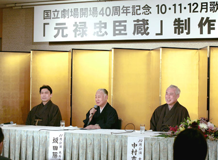
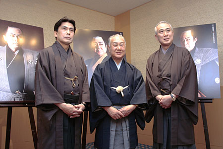

「元禄忠臣蔵」制作発表記者会見に臨む（左から）松本幸四郎、坂田藤十郎、中村吉右衛門
国立劇場は今秋開場40周年を迎えます。これを記念して、今年9月から来年3月まで伝統芸能の各ジャンルにわたって、開場40周年記念公演を開催い
たします。
その先陣を切って、10･11･12月にかけて大劇場で上演する、真山青果作「元禄忠臣蔵」の制作発表記者会見が4月26日に行われました。
この作品は真山青果が膨大な史料を踏まえ、深みのある心理描写、ダイナミックなストーリー展開、華麗な台詞の応酬により、従来の「忠臣蔵」とは異なる魅力
で観客を魅了した昭和の「忠臣蔵」の傑作です。10編のエピソードからなる作品ですが、これまで全編を通して上演されることはありませんでした。今回、国
立劇場では開場40周年を記念して、3ヶ月の連続公演で全編を一挙上演いたします。会見には、中村吉右衛門（第一部・10月）、坂田藤十郎（第二部・11
月）、松本幸四郎（第三部・12月）と、各月の大石内蔵助を演じる三人が揃い、史上初の全10編通し上演にかける意気込みと抱負を、つぎのように語りまし
た。
10月・第一部（江戸城の刃傷・第二の使者・最後の大評定）大石内蔵助を勤める中村吉右衛門
「開場40周年という記念すべき公演にトップバッターで出演できて光栄です。大リーグのイチロー選手のようにヒットが出せるよう精一杯務めたい。人生模様
が散りばめられ、人間的な深みが感じられる作品で、今これに取り組むことで、真山青果の時代が歌舞伎に何を求めていたのかを考えてみたいと思います。今回
の通し公演は、父（松本白鸚＝八代目松本幸四郎）が一番喜んでくれるのではないでしょうか。」
11月・第二部（伏見撞木町・御浜御殿綱豊卿・南部坂雪の別れ）大石内蔵助を勤める坂田藤十郎
「上方歌舞伎の私に声がかかり大変驚きましたが、昨秋襲名のときに「生まれ変わって頑張りたい」と申し上げたとおり、全身全霊をかけて大石内蔵助を勤めた
いと思います。私は今から50年前に、三代目市川寿海さんの内蔵助で、おみのを勤めました。その折に寿海さんから、「初演のときは歌舞伎の姿を失わずに演
じた」と伺いました。本心を表に出さず、先への展開を深く腹におさめて、じっと世間を見つめる内蔵助の大きさが出せれば、と思います。」
12月・第三部（吉良屋敷裏門・泉岳寺・仙石屋敷・大石最後の一日）大石内蔵助を勤める松本幸四郎
「昭和の傑作と言われるこの作品を演じるのは、昭和生まれの役者としての務めです。内蔵助をいわゆる大人物としてでなく、人を思う心を持ったひとりの人間
として表現したいと思います。『大石最後の一日』は、10編の中で最初に上演された、「元禄忠臣蔵」の出発点となる舞台で、重要な場面です。かつて父（白
鸚）の舞台を見たお客様が「内蔵助はこういう人だったのかもしれない」とおっしゃったことがありましたが、これは最高のほめ言葉。そういう内蔵助に一歩で
も近づきたいです。」
